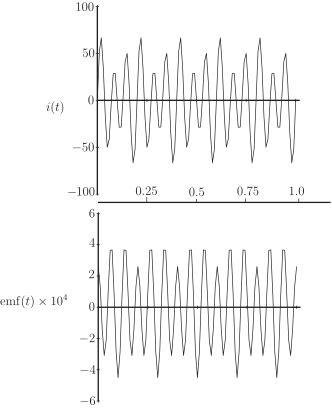

Long description: searchcoil

Alt text: The image displays two graphs showing sinusoidal functions, labeled \(i(t)\) and \(emf(t)\), plotted against time \(t\) from \(0\) to \(1.0\) seconds.
This description was generated by AI and has not been verified by a human. If you spot an error, please use the feedback link below.
- The top graph plots \(i(t)\) on the vertical axis, with values ranging from approximately \(-100\) to \(100\).
- The horizontal axis represents time \(t\), ranging from \(0\) to \(1.0\) seconds, with major tick marks at intervals of \(0.25\) seconds.
- The curve in the top graph shows a repeating, wave-like pattern, indicating the function \(i(t)\) oscillates sinusoidally over the displayed time interval.
- The bottom graph plots \(emf(t)\) on the vertical axis, with values ranging from approximately \(-6 \times 10^{4}\) to \(6 \times 10^{4}\).
- The horizontal axis for the bottom graph also represents time \(t\), ranging from \(0\) to \(1.0\) seconds, with major tick marks at intervals of \(0.25\) seconds.
- The curve in the bottom graph also displays a repeating, wave-like pattern, showing the function \(emf(t)\) oscillates sinusoidally over the displayed time interval.